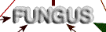
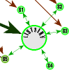
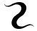

|
Web
Another primitive life model for digital environmentsBy Eric Matthews Initiated users may shrink back clutching their disks at the word 'virus,' and system administrators may tense up at the term 'worm,' so we'd expect something similar when someone says, 'It looks like our news group just got infected by a net fungus.' Sure, we all usually get a little pushed out of shape when organisms invade our sterilized, nicely organized environments, but occasionally organisms add just the right touch. Figure 1: A fungus infects a discussion list Historically, however, organic concepts in the digital realm have been little more than devastating. The class of computer viruses have given rise to hundreds of programs that self-replicate while having some algorithmic side-effect, which, like their namesakes, is almost always destructive. The class of worms tends to be a bit more autonomous making them even more life-like than viruses. (Biological viruses, although very much a part of the world of life, are not living since they are nothing more than chemical instructions without the ability to execute on their own.)  Network fungi as a class, on the other hand are dedicated neither to self-replication nor to the destruction of data (yet), because a fungus' key function is assimilation. For a model of this mode of artificial-life we look to real fungi. Fungi exist in many unicellular, multicellular, and symbiotic forms such as yeasts, mushrooms, lichens, and spontaneous fuzzy growths in the refrigerator. Fuzz is quite typical of fungi because all fungi grow filamentously (by tiny threads) into some substrate while secreting enzymes that help it break down and absorb organic material. The result, of successful assimilation of organic compounds is, of course, more filamentous growth by which the organism can attach itself to even more useful material. A fungus' key function is assimilation. Any program that operates in a similar mode of assimilation and growth can be referred to as a computer or network fungus. The so called agents or robots that search the World Wide Web for Web material to link up to could very well be called fungi, but in the genre of artificial-life we're looking for something a bit more organic in its behavior and, like real-world fungi, an algorithm that converts the material being absorbed into something else other than what it started as. Figure 1 of a fungus infecting a discussion list helps illustrate a primitive example. In this example, the fungal program becomes a subscriber to a listserve discussion list whose individual members distribute information to all other members through the listserve e-mail address. The information exchanged can, typically, only be read via e-mail by members and sometimes can only be sent by members as well. The fungus can change all this by converting to web pages all the e-mail it receives from this list. At the same time the fungus can open private discussion lists even further by forwarding e-mail it receives from non-subscribers to the list. As you might notice, fungal infections can be both desirable and intrusive. Certainly, as much activity as the Web gets now, many ideas along these lines are already being tried. But the idea of a web fungus invites-- and hopefully welcomes-- unpredictability. For instance, if a significant number of the people interacting with a discussion list by way of the fungus happen to know HTML, then HTML tags and references may start creeping into discussions to such an extent that browsing the list by Web would have distinct advantages. In this way, an entire e-mail discussion list can be converted into an interactive WWW list.
Zoolog is directly involved in two such discussion lists: switch@sjsuvm1.sjsu.edu (The electronic arts discussion list) and zoo@sjsuvm1.sjsu.edu (The artificial life discussion list). You can subscribe to either by sending an e-mail message to listserv@sjsuvm1.sjsu.edu with either: subscribe switch firstname lastname or: subscribe zoo firstname lastname all by itself in the body of the e-mail message. What is more important, both of these discussion lists will shortly be available through their fungal counterparts at: http://cadre.sjsu.edu/switch/brew/ and: http://cadre.sjsu.edu/zoo/brew/ So let's see where else the term 'fungus' turns up, but remember: You heard it here first. Eric
|